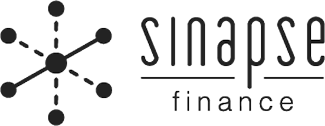

02 / Sinapse Finance
Menos trabalho manual, mais foco no que importa
Desenhei interfaces de automações financeiras e revisei formulários com base em dados de uso, para tornar processos complexos mais compreensíveis.
{kind=link}
O contexto do projeto
A Sinapse Finance trabalhava com terceirização de processos financeiros para pequenas e médias empresas. A proposta era usar tecnologia para tornar tarefas operacionais do dia a dia mais rápidas, previsíveis e fáceis de acompanhar.
Durante minha atuação como designer principal, trabalhei em duas frentes relacionadas dentro desse mesmo contexto.
A primeira era uma plataforma de automações financeiras. A Sinapse já executava integrações entre sistemas como ERPs, gateways e outras APIs, mas essas automações funcionavam “por trás dos panos”. O desafio era transformar essa capacidade técnica em uma interface compreensível, configurável e controlável pelos usuários.
A segunda frente surgiu durante esse trabalho. A empresa utilizava formulários para receber informações necessárias às operações financeiras, mas havia muitas reclamações. Inicialmente, o problema parecia ser técnico: o formulário tinha bugs e havia sido implementado sob forte pressão de prazo. A investigação mostrou que o atrito era mais profundo.
Os dois projetos tinham, portanto, o mesmo objetivo: reduzir esforço manual e acelerar processos financeiros, mas atacavam partes diferentes da operação.
Tornar automações invisíveis em um produto
A Sinapse já tinha clientes utilizando automações financeiras, mas sem uma representação visual dos fluxos. Isso limitava a transparência e fazia com que configuração, acompanhamento e manutenção dependessem muito da própria equipe da Sinapse.
O usuário principal era alguém acostumado ao contexto financeiro: conhecia processos de negócio, utilizava ferramentas digitais no trabalho e queria reduzir atividades manuais. A partir das interações disponíveis com clientes, identifiquei três necessidades recorrentes: mais controle, mais transparência e mais agilidade para implementar automações.
O problema não era simplesmente desenhar uma interface visual para integrações. Era representar regras financeiras complexas sem tornar a ferramenta tão complexa quanto a tecnologia que existia por trás dela.
Um formulário que não estava reduzindo trabalho
O problema dos formulários apareceu de maneira mais urgente.
Eles haviam sido criados para padronizar a entrada de informações necessárias à operação financeira. Na prática, porém, muitos clientes não queriam preencher os campos diretamente. Era comum enviarem informações por meios mais convenientes e informais ou entrarem em contato com a Sinapse para que os próprios consultores preenchessem o formulário.
Em alguns fluxos, fornecedores dos clientes também poderiam fazer o preenchimento, mas o mesmo tipo de problema aparecia: a informação passava por vários intermediários antes de chegar à operação.
Isso criava uma contradição: uma ferramenta criada para reduzir trabalho manual acabava transferindo parte desse trabalho para dentro da própria Sinapse.
Primeiro, entender o processo antes de desenhar as automações
A plataforma de automações precisava representar processos financeiros que já eram executados pela empresa. O espaço para redefinir essas rotinas era limitado: em grande parte, o produto precisava digitalizar e organizar regras que já existiam.
Antes de consolidar a interface, documentei os processos e as regras de negócio que precisariam ser representados. O mapeamento incluía condições, caminhos possíveis, erros e diferentes estados da automação.
Depois de organizar esse material, fizemos uma validação com stakeholders internos que conheciam profundamente os processos, incluindo o PO, especialistas financeiros e desenvolvimento sênior.
Essa etapa era particularmente importante porque transformar uma regra operacional em produto significava, em alguma medida, cristalizar aquela regra na interface e no software.
A colaboração com desenvolvimento aconteceu desde essa fase. Foram realizadas diversas reuniões de exploração, e os desenvolvedores participaram ativamente das discussões sobre possibilidades, restrições e custo técnico. A colaboração constante com engenharia já aparecia como parte importante do projeto original.

No formulário, começar pelo diagnóstico
No caso dos formulários, a investigação foi mais curta e concentrada, durando aproximadamente duas semanas.
Meu primeiro contato foi com desenvolvimento. Já havia conhecimento de alguns problemas técnicos, mas não tinha existido um processo estruturado de garantia de qualidade.
Comecei fazendo testes preliminares e identifiquei problemas de validação: campos que permitiam determinadas entradas inadequadas, regras pouco claras e situações em que os dados poderiam causar problemas no processamento posterior.
Em seguida, instrumentamos o fluxo para observar o comportamento real.
Como o formulário tinha muito uso, em poucos dias já havia bastante material para análise. Assisti às gravações de interação, tabulei os casos e comecei com uma classificação exploratória dos problemas.
Também conversei com consultores financeiros da própria Sinapse, responsáveis pela execução das atividades terceirizadas. Essas conversas ajudaram a interpretar as evidências comportamentais a partir do conhecimento do processo financeiro.
O problema não era apenas bug
A telemetria mudou significativamente o entendimento inicial do problema.
Em um período analisado após um hotfix, os dados do Hotjar mostravam:
- 58% de submissões concluídas com sucesso;
- 42% das sessões com dificuldade de uso ou compreensão;
- 39% de abandono;
- 17% com ocorrência de bugs.
No Google Analytics, o formulário apresentava 75,25% de rejeição e tempo médio de 5min08s.
Se os bugs fossem a principal causa, seria esperado que eles aparecessem de forma muito mais dominante nas sessões. O que apareceu, porém, foi um conjunto mais amplo de problemas: dificuldade de compreender os campos, validações pouco claras, ausência de prevenção adequada de erros, limites de upload não comunicados e um tempo de preenchimento elevado.
A partir daí, o problema deixou de ser:
“Como corrigir este formulário?”
e passou a ser:
“Até que ponto a operação deveria depender de um formulário?”
Essa mudança de enquadramento é o principal insight desse projeto. O próprio material original já apontava que a dependência dos formulários era um problema mais profundo do que a presença de bugs.
Nas automações, flexibilidade tinha um custo
Na plataforma de automações, explorei inicialmente padrões mais flexíveis.
Entre as alternativas estavam um diagrama visual com drag and drop e uma estrutura em formato de wizard.
O diagrama parecia uma representação natural para automações, mas havia uma dificuldade: as regras financeiras e suas condicionais já exerciam bastante pressão sobre o desenvolvimento. Quanto mais livre fosse a interface, maior seria a quantidade de estados, combinações e exceções que o sistema precisaria tratar.
A solução precisava encontrar um equilíbrio entre expressividade para o usuário e previsibilidade para implementação.
Uma estrutura linear para lidar com complexidade
A arquitetura escolhida para as automações foi um fluxo linear composto por etapas.
Cada etapa da automação era representada por um card, e configurações mais complexas eram quebradas em tarefas menores, muitas vezes tratadas por modais. Cada automação também poderia ser monitorada individualmente, desabilitada e acompanhada por meio de seu próprio registro de erros.
A decisão não partiu apenas de uma preferência por simplicidade visual.
Ela foi resultado de um trade-off: preservar clareza para o usuário sem transformar a interface em uma representação impossível de sustentar tecnicamente.
Em vez de permitir que o usuário construísse qualquer diagrama possível, a interface guiava a construção dentro das regras que a Sinapse conseguia efetivamente executar.


Melhorar o formulário sem tratar isso como solução definitiva
No formulário, trabalhei primeiro para remover os atritos já comprovados.
Os labels foram reescritos para comunicar melhor o significado dos campos e ganharam pequenas descrições auxiliares antes da entrada.
Também reorganizei a ordem das informações e trabalhei a hierarquia visual, aproximando o formulário da linguagem utilizada no restante da plataforma.
Um problema importante era o upload de arquivos. Os usuários não sabiam que havia limites de tamanho e frequentemente tentavam enviar arquivos acima do permitido. Esses limites passaram a ser comunicados diretamente na interface.
As mensagens de erro também foram redesenhadas. Em vez de apenas impedir a continuidade, cada campo passou a explicar o que havia dado errado e o que o usuário precisava corrigir.
O objetivo era combinar prevenção, explicação e recuperação de erro.
Duas hipóteses além do formulário
Os dados indicavam que havia um limite para o quanto o formulário poderia ser otimizado.
Por isso, além do redesign imediato, surgiram duas hipóteses para reduzir a própria necessidade de preenchimento manual.
A primeira era uma interface conversacional, possivelmente integrada ao WhatsApp. A proposta era incorporar a coleta de informações a um canal mais próximo do comportamento que os clientes já demonstravam.
Essa hipótese não avançou para prototipação, porque a área de negócio precisava primeiro avaliar sua viabilidade financeira.
A segunda hipótese era utilizar OCR e técnicas de IA para extrair dados diretamente de documentos estruturados, como notas fiscais, reduzindo a quantidade de informações que o usuário precisaria digitar.
Em 2022, essa alternativa tinha uma dependência técnica muito maior do que teria hoje. A análise com desenvolvimento chegou a acontecer, mas não chegou a uma resolução enquanto eu estava no projeto.
As duas hipóteses permaneceram, portanto, como direções de produto, não como soluções implementadas.
Testando a compreensão das automações
O acesso ao usuário primário das automações era limitado.
Por isso, além das validações internas com especialistas financeiros, recrutei participantes externos acostumados com softwares de produtividade. Eles não tinham o mesmo conhecimento financeiro dos clientes da Sinapse, então esses testes não poderiam validar integralmente a aderência ao público-alvo.
Usei-os principalmente para testar clareza da interação e compreensão do fluxo.
A tarefa começava com um único prompt e o participante precisava configurar uma automação até o fim. A estrutura linear se mostrou compreensível, embora os usuários não especialistas encontrassem dificuldades relacionadas ao próprio conhecimento financeiro.
Os testes também revelaram um problema de hierarquia nos cards: nem sempre ficava claro qual papel cada etapa desempenhava.
Como resposta, cada card ganhou um pequeno “chapéu” descritivo, com termos como “Encerrar”, reforçando a função daquela etapa antes do conteúdo principal.
Foi um ajuste pequeno visualmente, mas importante para tornar o fluxo escaneável e reduzir ambiguidade.

Validando o formulário em produção
No formulário, também não havia acesso direto aos clientes finais para testes moderados.
Por isso, a validação aconteceu principalmente por meio da telemetria em produção.
Depois do redesign, fizemos uma medição mais curta. A taxa de submissões bem-sucedidas passou de 58% para aproximadamente 65%.
O bounce, que estava em torno de 75%, caiu para menos de 40%.
O tempo médio de preenchimento também diminuiu.
Esses resultados indicaram que o redesign havia tornado a solução existente mais eficaz: mais pessoas conseguiam concluir a tarefa e havia menos abandono.
Ao mesmo tempo, a melhoria não invalidava o insight anterior. O formulário havia ficado melhor, mas a oportunidade mais ampla continuava sendo reduzir a dependência da entrada manual.
Resultado
Os dois projetos tiveram desfechos diferentes.
No formulário, o ciclo foi curto e chegou a uma intervenção implementada e mensurada. O overhaul melhorou a taxa de conclusão, reduziu significativamente a rejeição e diminuiu o tempo necessário para preencher o fluxo.
Na plataforma de automações, o trabalho teve uma duração maior e terminou em outra etapa do ciclo de produto.
Antes de eu deixar o projeto, havia uma solução de ponta a ponta aprovada pelo PO, desenvolvimento, especialistas financeiros e demais stakeholders internos. O desenvolvimento já havia começado.
Como saí antes da implementação completa, não acompanhei métricas de adoção ou impacto em produção. Por isso, o resultado que posso sustentar nesse caso é o resultado de design: processos financeiros complexos foram mapeados, transformados em uma arquitetura de interação, validados internamente e convertidos em uma solução considerada viável para implementação.
Meu papel
Atuei como designer principal nas duas iniciativas, trabalhando com uma segunda designer que estava em transição de design gráfico/social media para UX.
Minha autonomia variou entre as frentes.
No projeto dos formulários, conduzi a investigação e o processo de evolução de uma solução já em produção: testes preliminares, instrumentação, análise de telemetria, classificação dos problemas, redesign e avaliação posterior.
Nas automações, meu papel envolveu discovery, documentação de regras, exploração de arquitetura, prototipação, validação e colaboração próxima com PO, especialistas financeiros e desenvolvimento.
Também produzi HTML e CSS para apoiar a entrega da interface ao time técnico.
Restrições
Os projetos aconteceram em um ambiente com algumas limitações importantes.
O acesso direto aos clientes era restrito, o que condicionou tanto a pesquisa quanto a validação.
Além disso, os processos financeiros já existiam dentro da operação da Sinapse. Havia pouco espaço para redefini-los radicalmente, e muitas decisões de produto precisavam respeitar ferramentas, práticas e regras que a empresa já dominava.
No projeto de automações, isso se combinava com uma complexidade técnica elevada. Quanto mais flexível fosse a interface, maior seria a pressão sobre desenvolvimento.
No projeto dos formulários, havia outra restrição: pouco tempo. A investigação, redesign e primeira avaliação pós-lançamento aconteceram em aproximadamente duas semanas, enquanto eu trabalhava simultaneamente na iniciativa de automações.
Reflexão
Hoje, eu trataria algumas condições organizacionais como parte explícita do próprio problema de design.
Principalmente, buscaria estabelecer mais cedo acordos sobre acesso a usuários, circulação de informações e participação do design nas decisões de produto.
No projeto de automações, por exemplo, o acesso limitado ao público-alvo restringia o que os testes poderiam realmente demonstrar. Hoje eu diferenciaria desde o início uma validação da mecânica da interface de uma validação da solução com seu usuário primário e deixaria essa limitação mais explícita para os stakeholders.
Também negociaria mais cedo o espaço necessário para discovery e validação. Quando essas condições não fossem possíveis, tornaria claros os riscos e os limites das conclusões que poderíamos tirar.
Apesar das dificuldades do contexto, esse trabalho consolidou um tipo de problema que continuou importante para minha atuação: desenhar produtos B2B de produtividade em que a interface precisa tornar processos operacionais complexos mais compreensíveis e manejáveis.
Nos dois projetos da Sinapse, o desafio não era simplesmente criar telas melhores.
Era decidir quanto da complexidade precisava aparecer para o usuário, quanto poderia ser absorvido pelo sistema e quanto deveria ser eliminado do processo por completo.